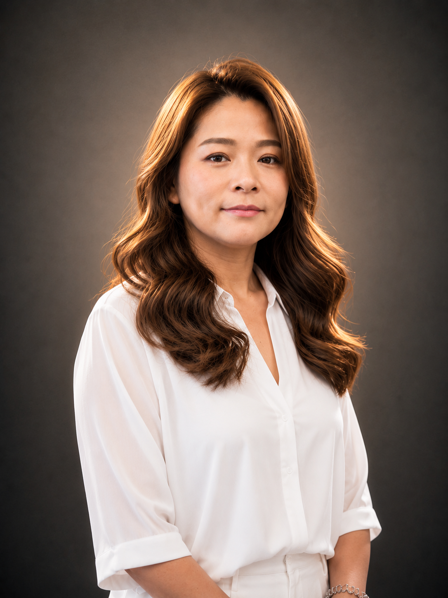
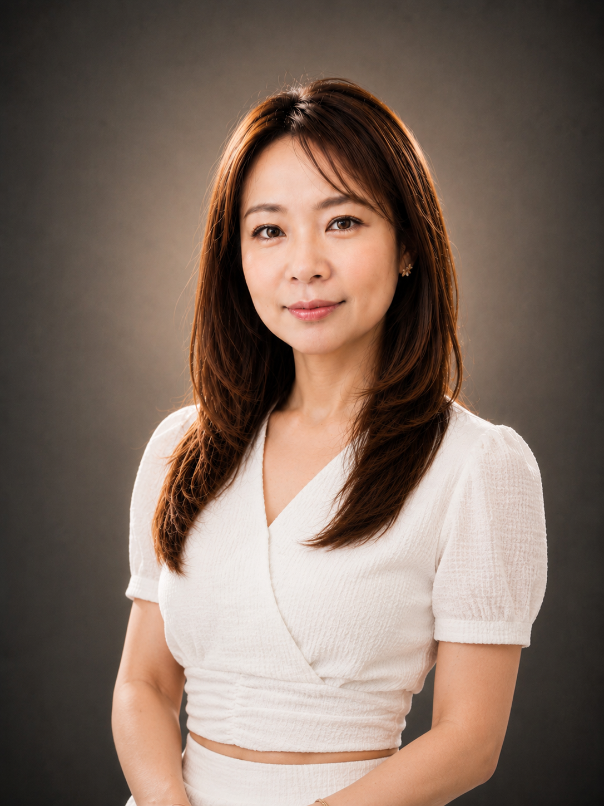

Iris 渼鈴
資深設計師擅長以成熟穩定的審美與溝通，整理出耐看、自然、適合日常維持的髮型。
質感剪裁自然髮色日常整理
Designers
ALICE 團隊以不同資歷與專長，協助顧客選擇適合的剪髮、染燙、護髮、頭皮管理與造型方向。
每位設計師都有獨立諮詢與服務節奏。預約時可先說明需求，讓我們協助安排合適人選。
擅長以成熟穩定的審美與溝通，整理出耐看、自然、適合日常維持的髮型。

細心聆聽顧客需求，適合想嘗試清新造型、基礎整理與輕盈變化的顧客。

重視剪裁比例、髮流與整體質感，協助顧客找到舒服又能展現個人特色的風格。

Jay 擅長把髮況、頭皮、染燙藥劑與居家整理方式說清楚。對他來說，髮型設計不是只追求當下效果，而是協助顧客理解什麼選擇適合自己的髮質、生活習慣與整理時間。
透過美髮理科小教室，Jay 將現場專業轉化成顧客聽得懂的知識，讓預約前的疑問能被清楚回答。